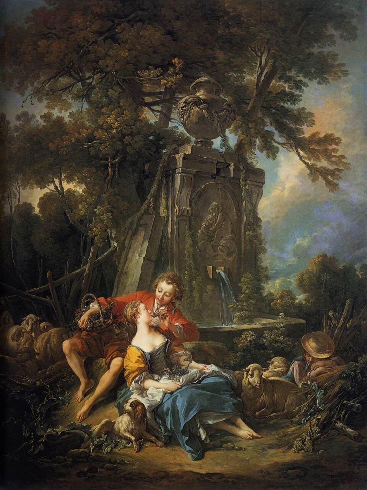

Vous êtes priés d'assister au mariage de
Florence&Jean-Yves
en un grand marché d'automne,
à la manière du XVIIIe siècle

Le jour des noces
Le
Samedi
23 octobre 2027
23 octobre 2027
À
14 h 30
Merci d'arriver un peu en avance
Au
Domaine des Mylords
Petite route d'Arles, 13150 Tarascon
—jours
—heures
—minutes
S'y rendre
Domaine des Mylords — Petite route d'Arles, 13150 Tarascon (Bouches-du-Rhône)
Point GPS : 43.772285, 4.667647
(43°46′20″ N, 4°40′04″ E)
Un marché d'automne au siècle des Lumières
Courges et pommes, paniers d'osier, étals de toile et musiciens : le domaine se fera place de marché, et nous vous espérons parés en gentilshommes et grandes dames, marchands ou voyageurs venus des Amériques.